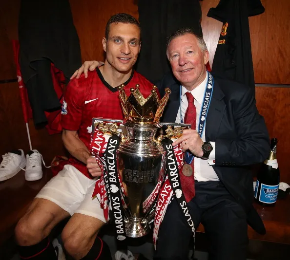

수상목록

개인수상
FIFA FIFPro 월드 XI: 2009, 2011
프리미어 리그 올해의 선수: 2008-09, 2010-11
프리미어 리그 이달의 선수: 2009년 1월
프리미어 리그 20시즌 베스트 XI (1992-93~2011-12)
PFA 올해의 팀: 2006-07, 2007-08, 2008-09, 2010-11
세르비아 올해의 축구 선수: 2005, 2008
세르비아 올해의 해외파 선수: 2005, 2007, 2008, 2010
맷 버스비 올해의 선수: 2008-09
맨체스터 유나이티드 선수단 선정 올해의 선수: 2008-09
ESM 올해의 팀: 2006-07, 2008-09, 2010-11
잉글랜드 축구 명예의 전당: 2016
IFFHS 올타임 세르비아 드림팀: 2022
팀수상
FK 츠르베나 즈베즈다 (2000~2004)
세르비아 수페르리가: (2003-04)
유고슬라비아컵: (2001-02)
세르비아 몬테네그로컵: (2003-04)
맨체스터 유나이티드 FC (2006~2014)
프리미어 리그: (2006-07, 2007-08, 2008-09, 2010-11, 2012-13)
풋볼 리그컵: (2005-06, 2008-09, 2009-100
FA 커뮤니티 실드: (2007, 2008, 2010, 2011, 2013)
UEFA 챔피언스 리그: (2007-08)
FIFA 클럽 월드컵: (2008)